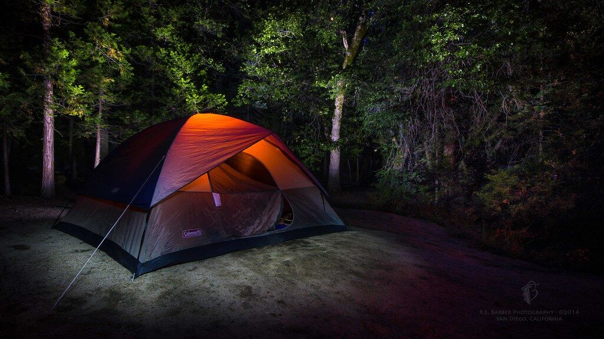
Primitive Camping
Pitch your tent in a natural, rustic setting. Primitive camping keeps things simple: you, the land and the open sky.
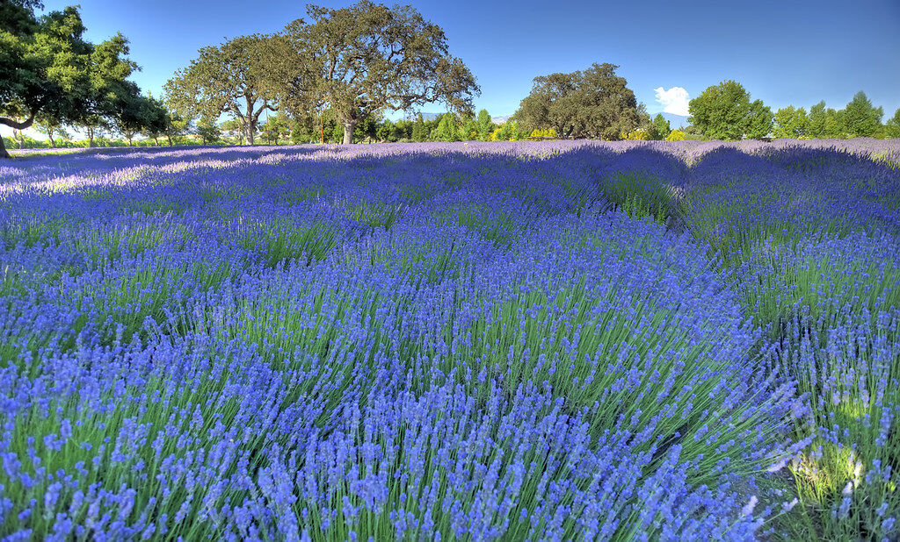
Whitesville, New York
Lavender, willow & the old crafts, where the morning mist lifts.
A small rural farm bringing together fragrant lavender, traditional willow work, hands-on workshops and quiet days beside the woods and water.
The Farm
Tucked into the countryside of Whitesville, New York, Foggy Dew Farm is a rural destination where growing things and making things go hand in hand.
Here, rows of lavender are taking root, willow is gathered for weaving, and traditional skills such as basketry, broom making and drum making are shared in the company of others. Beyond the fields lie woods and a trout stream, and simple places to pitch a tent and listen to the night.
Our name echoes the old Irish air, and a quiet thread of Celtic heritage runs through what we do: an affection for craft, for the land, and for the gatherings that bring people around a fire.
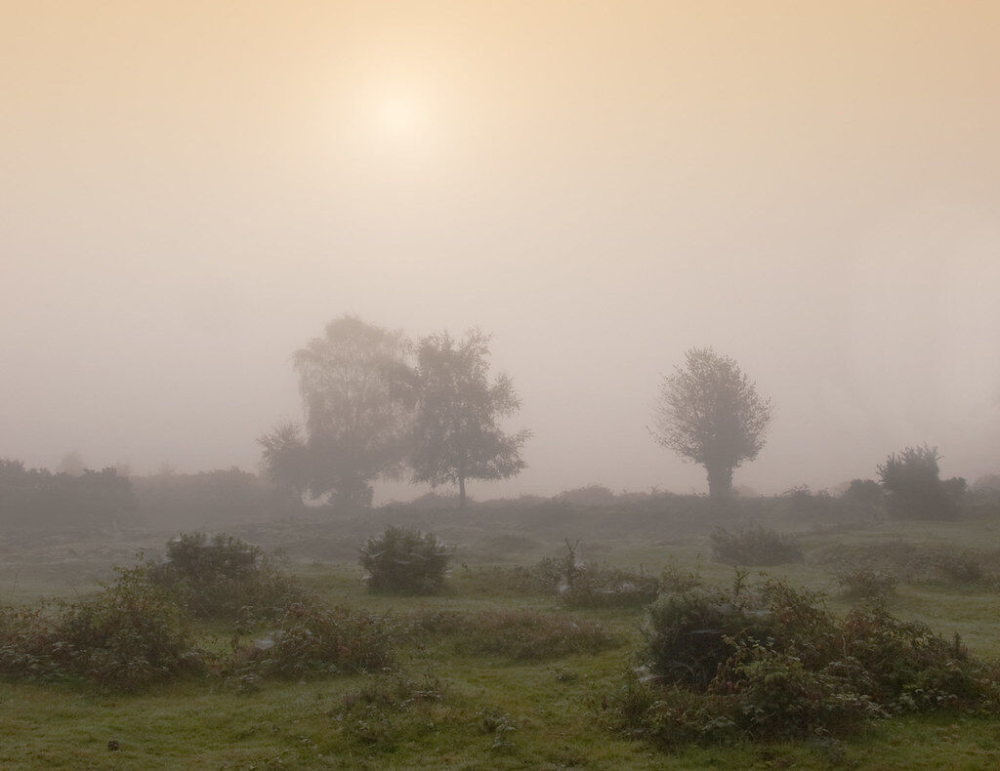
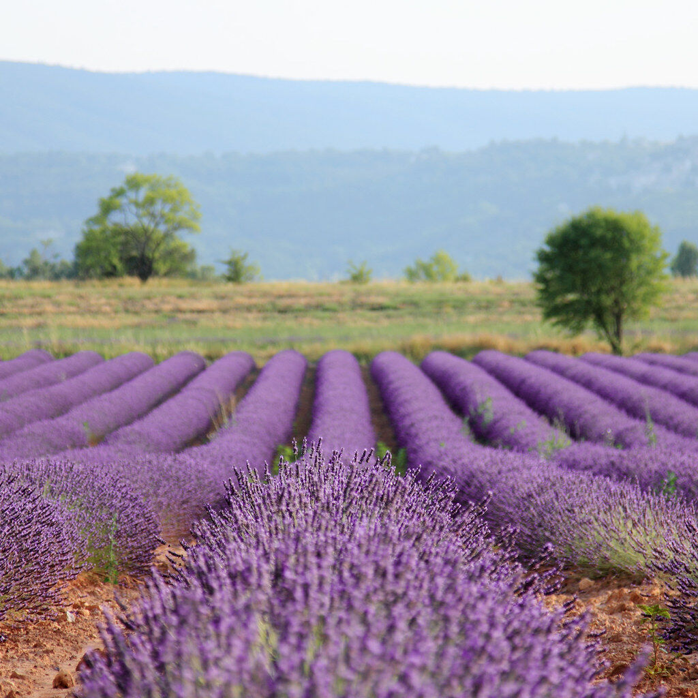
Growing now, with our first harvest and handmade lavender products planned for 2028.
The lavender storyWillow in bulk for makers, handmade baskets, and classes in traditional skills.
Willow & basketsDrum making, broom making, basket making and firewalking, all made to be shared.
See experiencesPrimitive camping in a natural setting, and a trout stream to wander beside.
Camping & the streamLavender & Natural Products
Our lavender is in the ground and growing. Good lavender takes patience, and we are letting the plants come into their own before the first cutting.
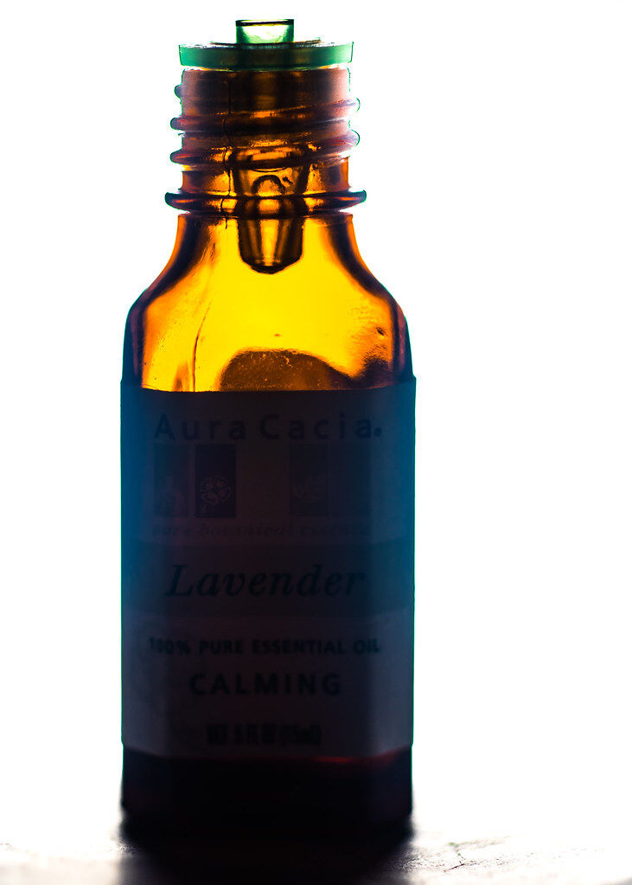
Planned · 2028A pure, fragrant oil drawn from our own lavender: the heart of the harvest.
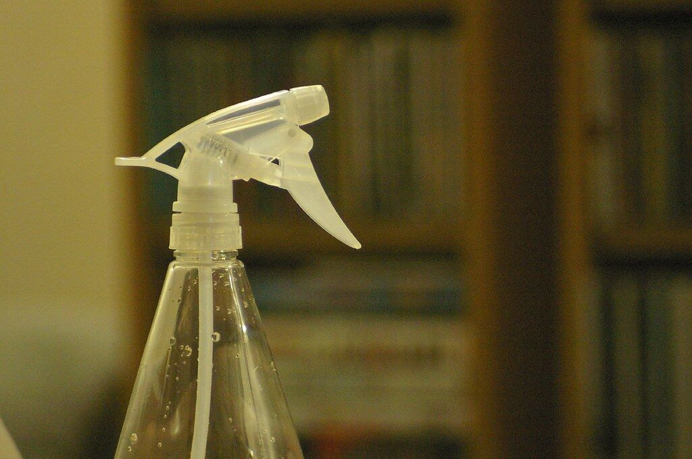
Planned · 2028A lavender-based insect repellent for porches, gardens and evenings outdoors.
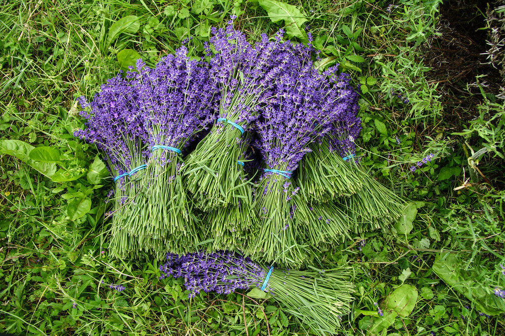
Planned · 2028Hand-tied bunches, fresh in season or dried to keep their colour and scent.
We're exploring more small-batch lavender creations. Ideas are taking shape alongside the plants.
[Product range to be confirmed]
Willow & Handmade Crafts
Supple when fresh, strong when dry, willow has been woven into baskets for generations. It is a material that rewards patient hands, and it is at the heart of the craft we share.
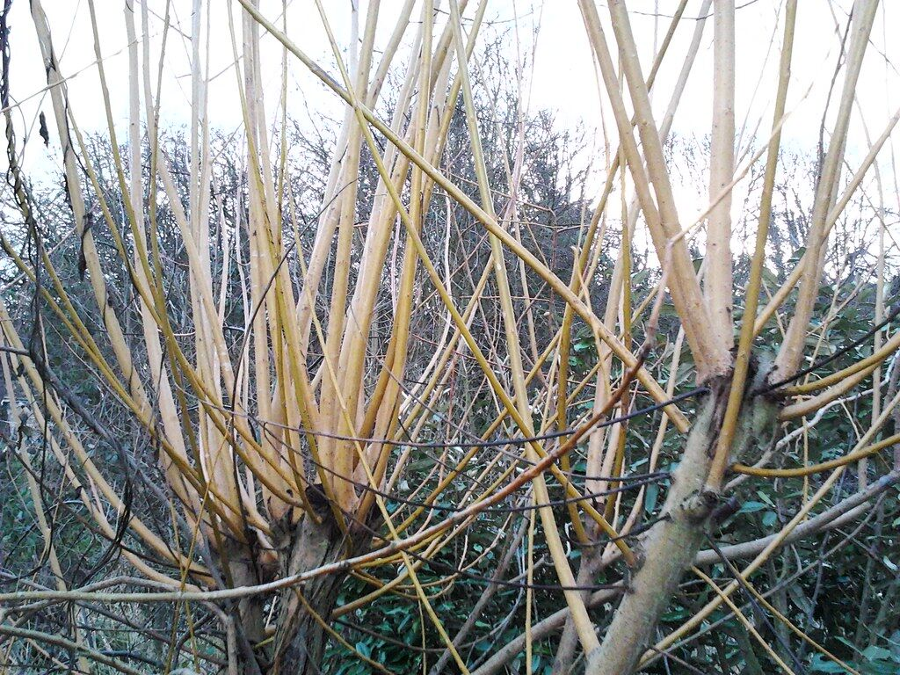
Willow sold in bulk for basket makers, weavers, garden builders and anyone with a project in mind. Long, flexible rods with the natural colour and character that only a living material has.
[Varieties, lengths, bundle sizes and pricing to be added]
Enquire about bulk willow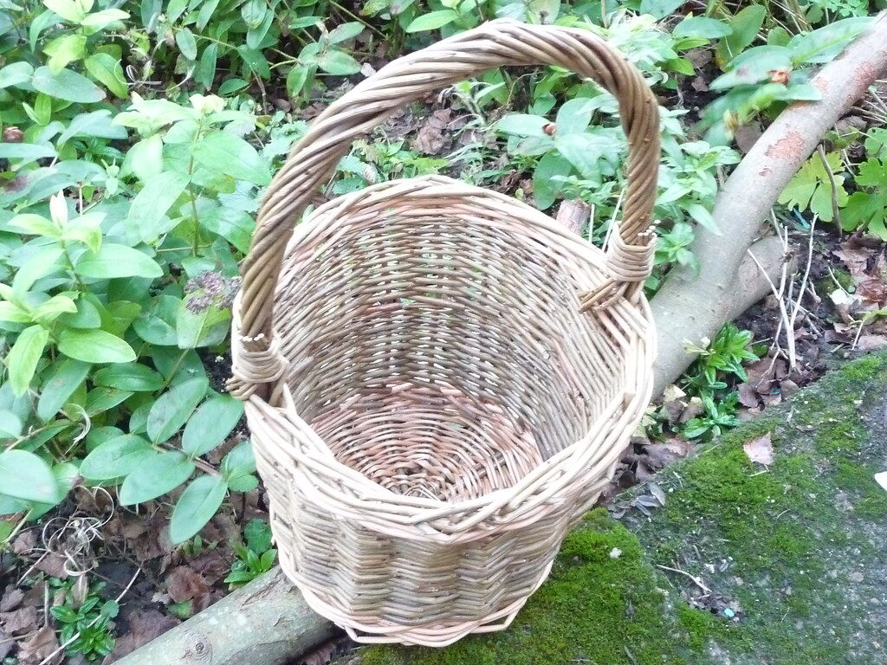
Each basket is woven by hand, rod by rod, through the stake, weave and border, in the way baskets have long been made. Practical, sturdy and made to be used for years.
[Basket styles and availability to be added]
Ask about basketsWorkshops & Experiences
Hands-on workshops in traditional crafts, and experiences rooted in ritual and community, are at the heart of life at Foggy Dew.
Workshop
Shape and lace a hand drum of your own, then hear its voice for the first time. A grounding, meditative craft with a long and ancient lineage.
Enquire about drum making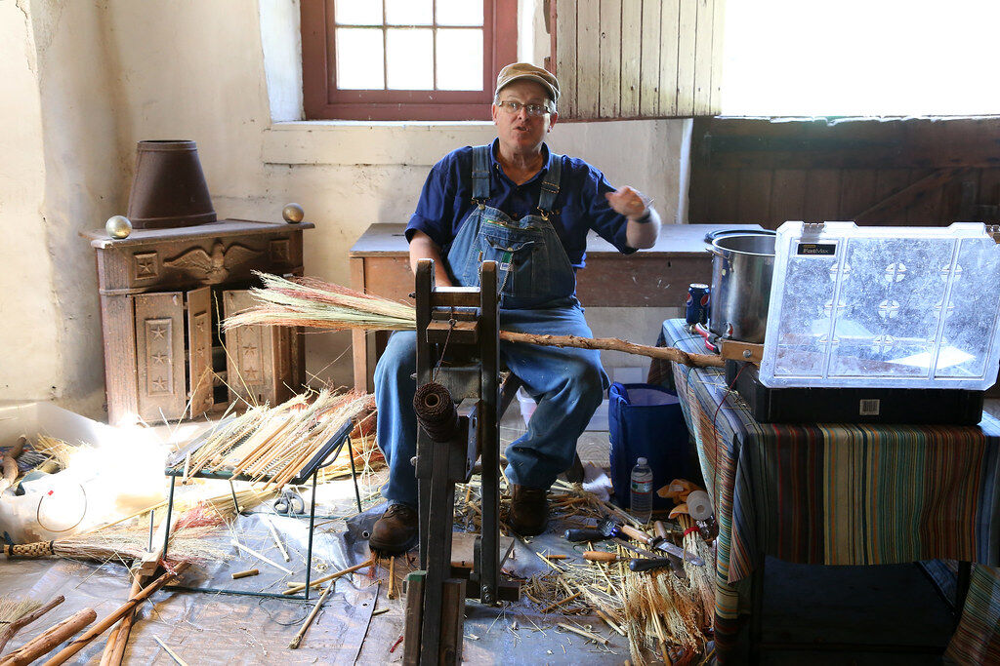
Class
Learn to gather, bind and finish a traditional broom, an everyday object made beautiful through time-honoured technique.
Enquire about broom makingExperience
Gather around the fire and step across the embers. An experience of focus, courage and community you will carry with you long after.
Enquire about firewalking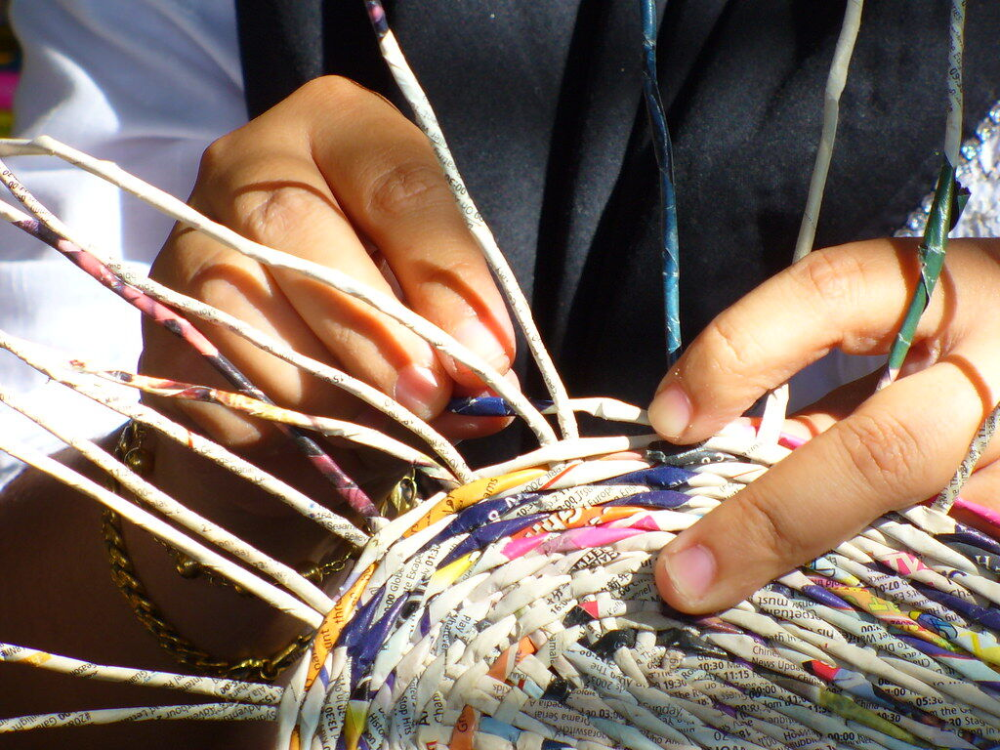
Class
Work with willow from first stake to finished border, and leave with a basket made by your own hands, along with the skills to make another.
Enquire about basket makingCamping & the Trout Stream
Trade screens for starlight. Simple, rustic and quiet, it is a chance to slow down and let the sound of moving water set the pace.

Pitch your tent in a natural, rustic setting. Primitive camping keeps things simple: you, the land and the open sky.
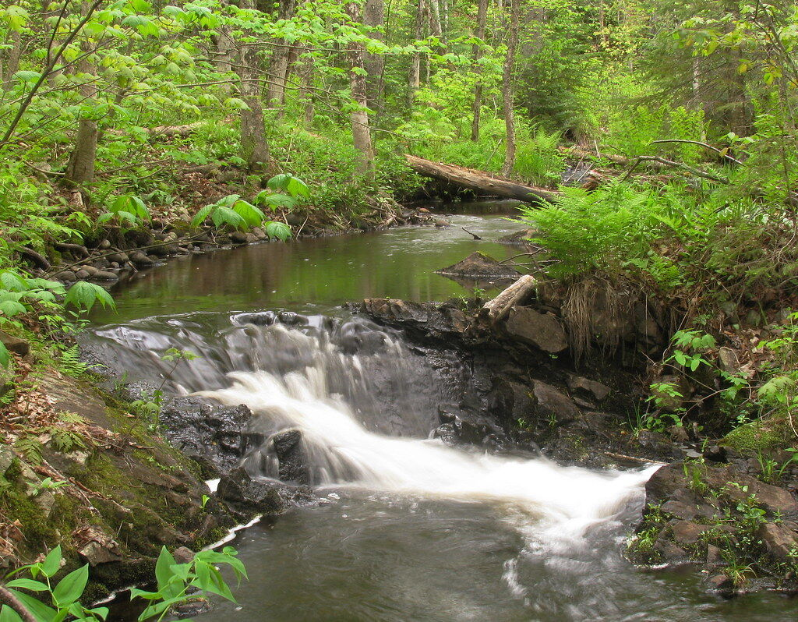
A cool, clear stream winding through the green. It is a place to sit, listen and watch the light on the water.
Contact & Enquiries
Questions about workshops, willow, camping or the 2028 lavender harvest? We'd love to hear from you.
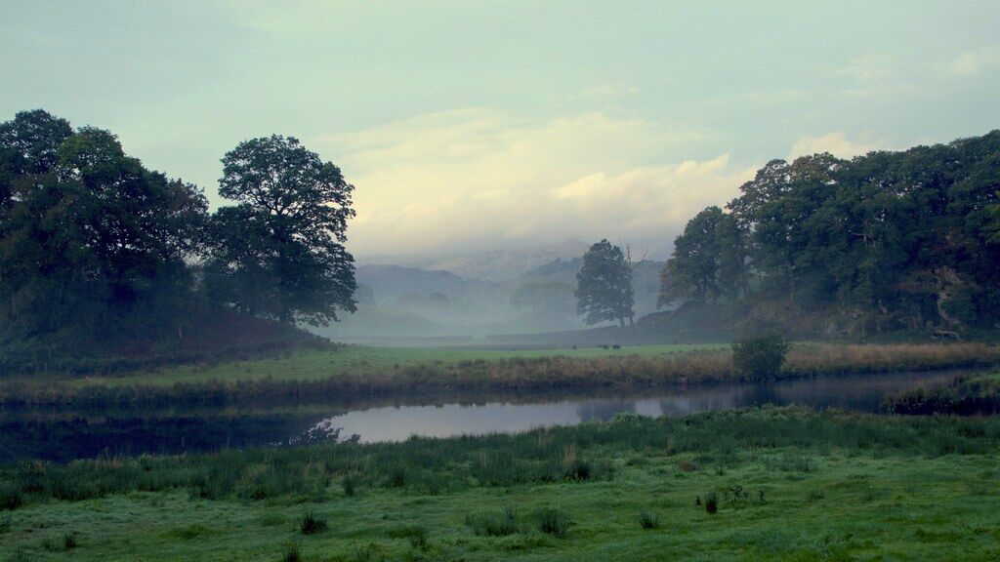